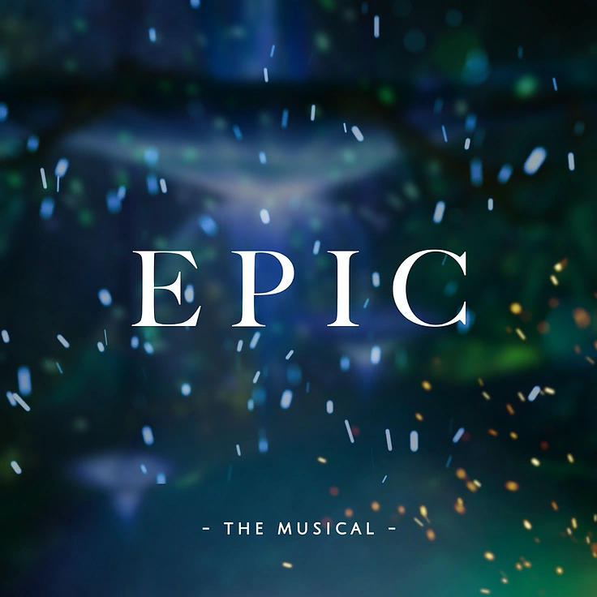

Epic: The musical
El musical nos cuenta la historia de Odiseo, interpretado por Jorge Rivera-Herrans, desde el final de la guerra de Troya y siguiendo la travesía de este mismo hasta llegar a Ítaca, junto con su esposa, Penélope, y su hijo, Telemaco.
Esta obra es una sorpresa, pues aún no está terminada. El musical consta con un total de 9 canciones oficiales, estas están divididas en dos álbumes que el escritor denominó como “sagas”: “The Troy Saga”, con cinco canciones, y “The Cyclops saga”, con cuatro melodías, pero está previsto que sean 9 sagas, contemplando a Troy, Cyclops, Ocean, Circe, Underworld, Thunder, Wisdom, Vengeance e Ithaca, con cuarenta tracks en total.
Un poco màs acerca del musical.
A diferencia de otro musical inspirado en un mito griego, Hadestown, escrito por Anaïs Mitchell, que es más calmado y tranquilo porque su género es de folk and blues con un poco de jazz, Epic: The Musical es más explosivo, sus ritmos van desde el pop clásico, orquesta y electrónica, tiene toques de hip-hop y rock. Además, el autor se encargó de que cada vez que un personaje aparecía, un instrumento predominaba mientras este continúa en escena. Odiseo, la guitarra; Atenea, interpretada por Teagan Earley, el piano, y por los vistazos que Jorge ha dejado ver en sus redes sociales, Hermes, interpretado por el tiktoker Troy, sería el Arpa, y así mismo con los demás dioses.
¿Es buena la letra de las canciones?
Las letras, por su parte, son excelentes; cuentan una historia lineal hasta el momento. Hay frases que se usan como leitmotif, o sea, un asunto que se repite. Se utiliza, por ejemplo, la frase “Just a man” en dos ocasiones: Una por Odiseo y la otra por Atenea; Odiseo se refirió a él como “sólo un hombre”, cuando Zeus le comentó sobre la visión de matar al hijo de Héctor, que solo era un bebé, pero, cuando crezca, destruirá a todos los que él ama; mientras que Atenea se refiere a él como “solo un hombre”, porque para ser su guerrero, él tiene que dejar sentimentalismos de lado, pero ahora no puede, porque nada más es un simple humano.
Lo malo del musical es que no está completo y la diferencia entre fechas de publicación se está haciendo visible. El último álbum que se publicó fue The Cyclops Saga el 27 de enero de este año, mientras que su predecesor y álbum debut de la saga, The Troy Saga, se publicó el 25 de diciembre del año pasado. Son fechas relativamente cercanas, pero aún no hay lanzamiento calendarizado para su tercer álbum. Sólo ha anunciado por sus redes sociales que espera que durante el presente año publicaría dos álbumes más. Esto podría jugarle en contra, porque toda su estrategia de marketing se basó en formar una comunidad por las nuevas redes sociales, Discord, TikTok y Twitch. ¿Qué pasa si el algoritmo cambia?, ¿o si la gente se aburre de esperar? Lo dejaremos para los siguientes meses.
Epic: The musical es un proyecto ambicioso e innovador, nos demuestra que la nueva era ha comenzado y es digital. Aunque no está terminado, el musical destaca por sus letras y su música explosiva, tiene todo en sus manos para seguir el mismo éxito de Hamilton: An American Musical, pero las brechas entre las fechas de publicación de los álbumes sea el principal desafío para su éxito.